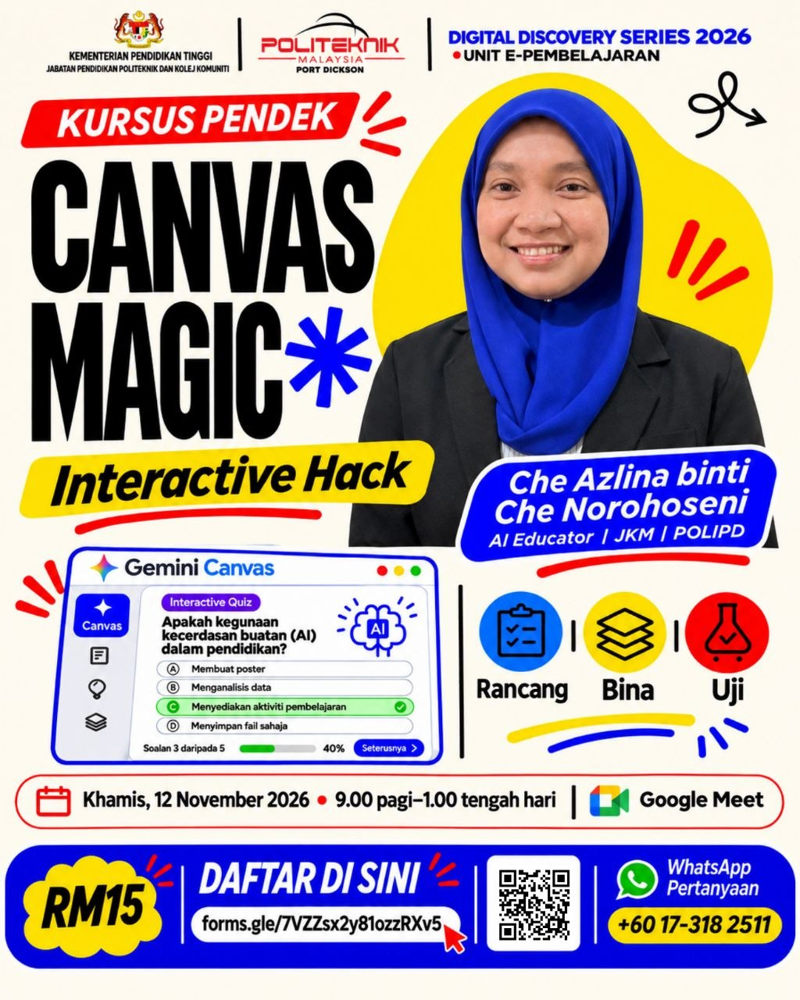

Simulasi Slider-Crank
Ubah panjang crank, connecting rod dan RPM untuk melihat mekanisma bergerak.
▶ Cuba aplikasi
Belajar langkah demi langkah. Klik slot kursus, cuba contoh aplikasi sebenar dan bina projek anda sendiri.
Lihat 3 contoh web app ↓Daripada idea PdP kepada aplikasi interaktif — tanpa perlu mahir coding.
Apakah fungsi Turbine?
Tekan Cuba aplikasi untuk membuka contoh dalam paparan besar. Anda boleh berinteraksi dengan simulasi dan kuiz seperti pelajar sebenar.
Ubah panjang crank, connecting rod dan RPM untuk melihat mekanisma bergerak.
▶ Cuba aplikasiPermainan 3 tahap: kuiz konsep, makmal omboh dan padanan situasi.
▶ Cuba aplikasiFlashcard empat komponen, kuiz dan paparan sijil pencapaian.
▶ Cuba aplikasiNota: Contoh asal menggunakan beberapa pustaka dalam talian. Fungsi tertentu memerlukan internet. Sambungan Google Sheets dalam contoh Rankine adalah konfigurasi asal dan tidak digunakan secara automatik oleh laman kursus ini.
Kumpulkan refleksi daripada peserta (contohnya melalui ruangan chat Google Meet), kemudian salin dan tampal semua jawapan di bawah. Klik Paparkan refleksi untuk menghasilkan kad yang mudah dibaca pada bahagian bawah laman.
Belum ada refleksi dipaparkan.
Privasi: refleksi hanya disimpan dalam pelayar/peranti yang digunakan. Ia tidak dikumpulkan secara automatik daripada peserta lain dan tidak disegerakkan antara peranti. Dapatkan persetujuan sebelum memaparkan nama atau komen peserta.